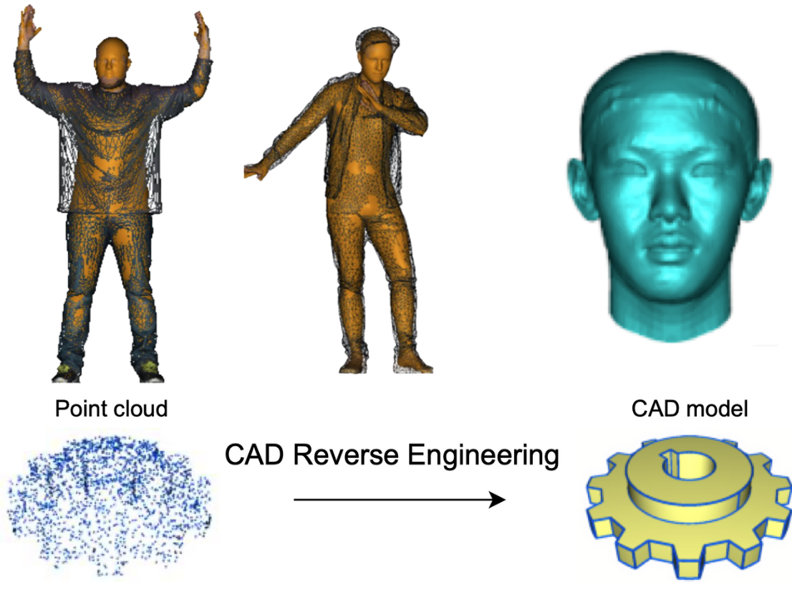
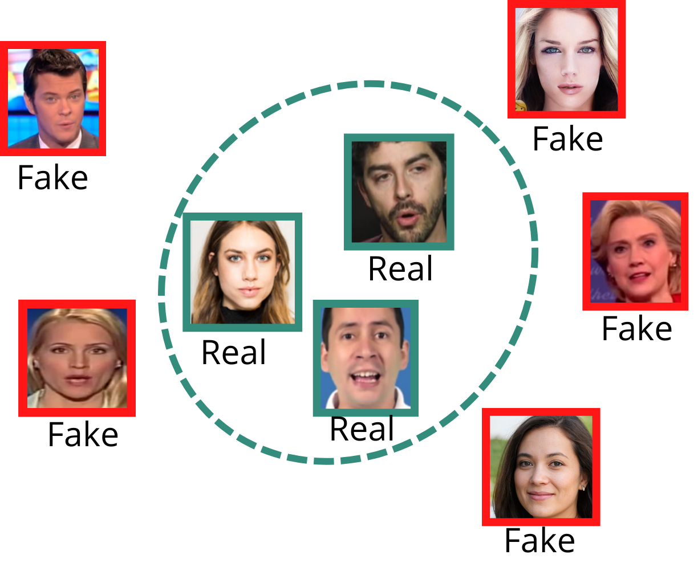

Welcome

I am a Professor at the University of Luxembourg, where I serve as the Acting Vice Director of the Interdisciplinary Centre for Security, Reliability and Trust (SnT). I head the Computer Vision, Imaging and Machine Intelligence (CVI2) Research Group, focusing on Computer Vision and Machine Learning research.
My research interests span Computer Vision, Image Processing, and Machine Learning, with a particular focus on 3D Shape Modeling, Multi-modal Sensing, and Geometric Deep Learning. I actively work on applications in Face Recognition, DeepFake Detection, Human Body Modeling, and Space Situational Awareness.
Latest News
Named Acting Vice Director of the SnT Centre at the University of Luxembourg.
Appointed Member of the Algerian AI Board by the Algerian Government.
Joined the Scientific Council of the National School of Artificial Intelligence (ENSIA), Algeria.
Research Highlights
3D Shape Modeling
Advanced research in geometric modeling and analysis of 3D shapes, focusing on novel deep learning approaches.
DeepFake Detection
Development of cutting-edge techniques for detecting and analyzing artificial manipulations in digital media.
Space Situational Awareness
Leading research in space object detection and tracking using advanced computer vision techniques.